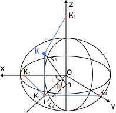

ВЫЧИСЛЕНИЕ ГЕОДЕЗИЧЕСКИХ ПРОСТРАНСТВЕННЫХ КООРДИНАТ
Обратное преобразование от прямоугольных пространственных координат (X, Y, Z) к геодезическим координатам (B, L, H) на поверхности референц-эллипсоида
ВВЕДЕНИЕ
Обратное преобразование координат
Обратное преобразование от пространственных прямоугольных координат X, Y, Z к геодезическим B, L, H является более сложной задачей по сравнению с прямым переходом, поскольку требует решения нелинейных уравнений относительно широты и высоты.
В то время как прямые формулы позволяют вычислить X, Y, Z непосредственно, обратная задача решается итерационными методами. Наиболее распространённым является итерационный способ К.А. Лапинга, обеспечивающий быструю сходимость при заданной точности.
ГЕОМЕТРИЧЕСКАЯ ИНТЕРПРЕТАЦИЯ
Взаимосвязь систем координат в пространстве

Обозначения на рисунке
Нормалью к поверхности в заданной точке является перпендикуляр к касательной плоскости в этой точке. Все точки, лежащие на одной нормали, имеют одинаковые геодезические широту и долготу, но различаются по высоте.
ОПРЕДЕЛЕНИЕ ГЕОДЕЗИЧЕСКОЙ ДОЛГОТЫ
Прямая формула через тангенс долготы
Геодезическая долгота L вычисляется непосредственно по формуле:
Для корректного определения долготы необходимо учитывать четверть расположения точки по знакам координат X и Y. Выделяются три основных случая:
Случай 1: X = 0
- • Если Y = 0: долгота не определяется (полюс)
- • Если Y > 0: L = 90°
- • Если Y < 0: L = 270°
Случай 2: X > 0
- • Если Y ≥ 0: L = L′
- • Если Y < 0: L = 360° − L′
Случай 3: X < 0
- • Если Y ≥ 0: L = 180° − L′
- • Если Y < 0: L = 180° + L′
ИТЕРАЦИОННЫЙ СПОСОБ ЛАПИНГА
Вычисление широты и высоты методом последовательных приближений
Наиболее удачный итерационный способ решения задачи был предложен К.А. Лапингом на заре использования ИСЗ в геодезии. Метод основан на построении итерационного процесса для определения геодезической широты.
Начальное приближение
Для получения начального значения широты B(1) временно предполагается, что геодезическая высота равна нулю:
Рассмотрение формулы начального приближения указывает на существование двух особых случаев: при Z = 0 точка находится в плоскости экватора и B = 0, H = Q − a; при Q = 0 точка лежит на оси Z, B = ±90°, H = |Z| − b.
Итерационный процесс
В каждой итерации (i = 1, 2, 3, …) последовательно вычисляются следующие величины:
Критерий окончания
Итерационный процесс продолжается до достижения заданной точности сходимости:
Величина εB задаётся пользователем и обычно принимается равной 0,0001″. При выполнении условия геодезическая широта считается найденной.
Вычисление геодезической высоты
После нахождения широты геодезическую высоту можно вычислить одной из трёх формул:
Рекомендация: предпочтительнее использовать универсальную формулу (3), так как она позволяет определить геодезическую высоту с меньшей погрешностью во всех точках пространства. На экваторе и полюсах погрешность равна погрешности пространственных координат, а на широте 45° она может достигать 1,33 · mX.